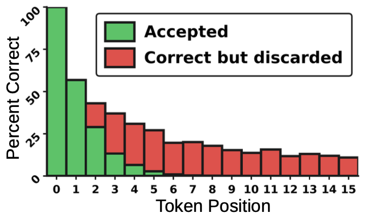
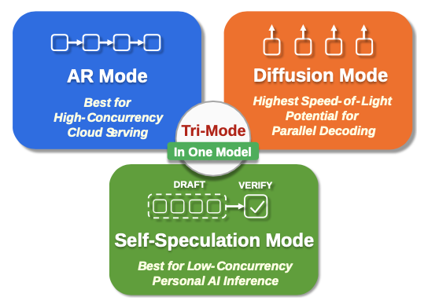
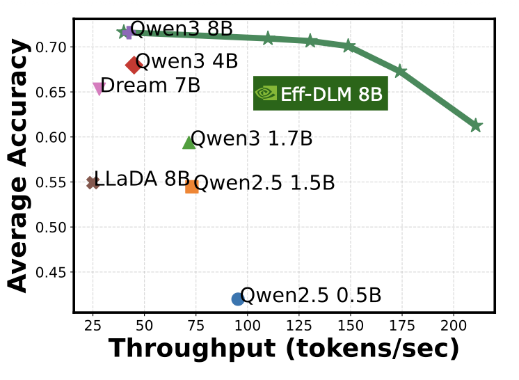
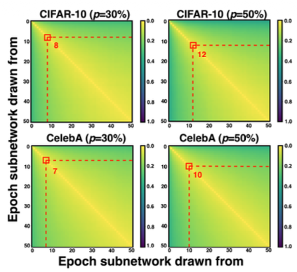
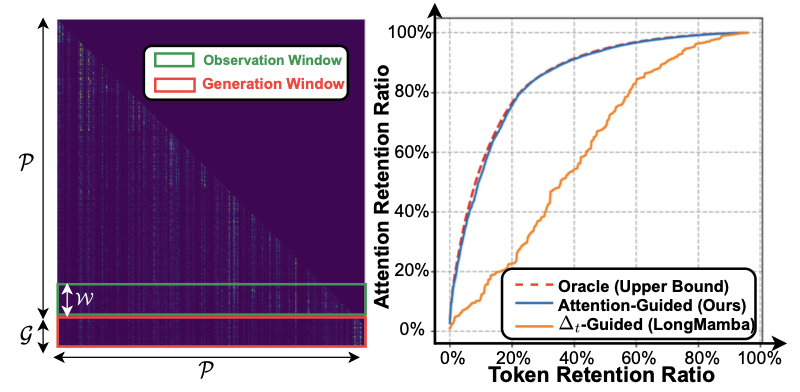
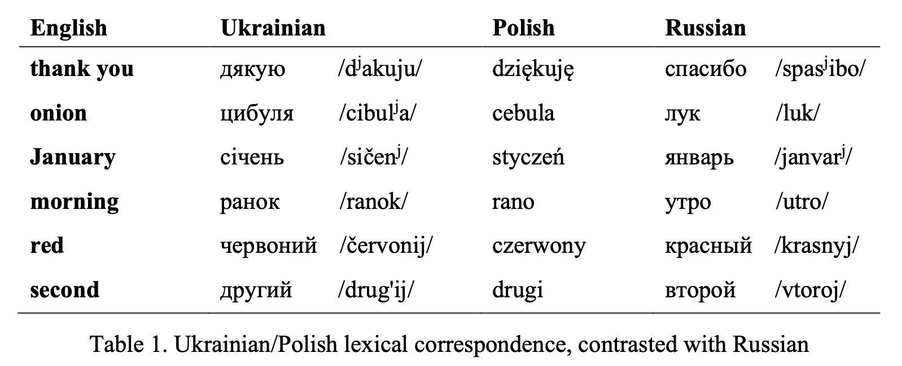

Lexington Whalen
Research Lead, SB Intuitions (SoftBank) · NSF Graduate Research Fellow, Georgia Tech
I am a machine learning researcher specializing in efficient training and inference of large language models. At SoftBank's SB Intuitions, I co-lead pretraining and inference optimization for the Sarashina LLM family — Japan's largest language models. Previously I was at NVIDIA Research, where I co-developed Nemotron-Labs-Diffusion and co-led Efficient-DLM (ICML 2026). I was a NSF Graduate Research Fellow and pursued an M.S. in CS at Georgia Tech.
I am committed to mentoring students, and make time for this every week. Please feel free to message me on LinkedIn and I will try to respond. I don't care about background, and the request can be anything from resume reviews to just general advice. Please note that I cannot help with internship / university / job applications unless I directly was involved in your project.
- Jul 2026Invited talk at SB Intuitions: Diffusion Language Models: From Fundamentals to Applications
- Jun 2026New preprint: Teaching Diffusion to Speculate Left-to-Right — optimizations to raise accepted draft length by 21–76%
- Jun 2026Nemotron-Labs-Diffusion released on Hugging Face — ~1M total downloads, 6× tokens-per-pass over Qwen3-8B
- Jun 2026Efficient-DLM accepted at ICML 2026
- Jun 2026NeRArch-Sim accepted at ISCA 2026
- Apr 2026Joined SoftBank SB Intuitions as Pretraining & Inference Optimization Research Lead. Gave the SoftBank Group entrance ceremony speech.
- Apr 2025LAMB accepted at ACL 2025
- Apr 2025Early-Bird Diffusion accepted at CVPR 2025
-

Preprint 2026 · SB IntuitionsSpeculative decoding uses a lightweight draft model to propose tokens verified in parallel by a larger target. Diffusion LMs are natural drafters — they generate entire token blocks in parallel — but are trained with a symmetric bidirectional objective while verification is strictly left-to-right. We analyze three training-time interventions that close this gap: token positional weighting, a first-error focal loss targeting the position that breaks the accepted prefix, and a chain loss as a differentiable surrogate for expected accepted length. Across four target models and six benchmarks, the combined interventions raise accepted draft length by 21–76% without additional overhead. -

Tech Report 2026 · NVIDIAWe introduce a tri-mode language model that jointly optimizes autoregressive (AR) and diffusion objectives within a single architecture, enabling switching between AR, diffusion, and self-speculation decoding at inference time. AR and diffusion objectives are complementary: diffusion improves lookahead planning while AR injects strong left-to-right priors. In self-speculation mode, the diffusion head drafts while the AR head verifies, outperforming multi-token prediction in both acceptance rate and throughput. Scaling to 3B, 8B, and 14B, the 8B model decodes 6× more tokens per forward pass than Qwen3-8B at comparable accuracy.
-

ICML 2026 · NVIDIADiffusion LMs promise parallel generation but lag AR models in learning efficiency when trained from scratch. We study AR-to-dLM conversion: systematically identifying that block-wise attention — causal across blocks, bidirectional within — better preserves pretrained AR weight distributions than fully bidirectional training, yielding a win-win in accuracy and speed. We further propose position-dependent token masking to close the training-test gap. Efficient-DLM 8B achieves +5.4%/+2.7% higher accuracy with 4.5×/2.7× higher throughput than Dream 7B and Qwen3 4B. -
TBANeRArch-Sim: A Unified Simulator for Benchmarking and DSE of Neural Rendering AcceleratorsISCA 2026 · Georgia TechTo be announced.
-

CVPR 2025 · Georgia TechTraining diffusion models is computationally expensive due to multi-step forward and backward passes across many timesteps. We investigate the existence of Early-Bird (EB) tickets — sparse subnetworks that emerge early in training and maintain high generation quality — and introduce timestep-aware EB tickets that adapt their sparsity based on the importance of each timestep region. Our EB-Diff-Train method derives these tickets, trains them in parallel, and combines them at inference, achieving 2.9–5.8× speedups over training unpruned dense models and up to 10.3× faster training versus standard train-prune-finetune pipelines. -

ACL 2025 · Georgia TechState space models achieve efficient sub-quadratic compute but degrade significantly at long contexts due to exponential decay in hidden state memory. We investigate Mamba's attention patterns to explain why token filtering alleviates this degradation, then propose LAMB — a training-free, attention-guided token filtering strategy that preserves critical tokens during inference. LAMB boosts long-context performance for both pure SSMs and hybrid models, achieving up to 30.35% improvement over state-of-the-art techniques on standard long-context benchmarks. -

LSA 2023 · University of South CarolinaWe examine Putin's (2021) claim of "historical linguistic unity" between Russian and Ukrainian using computational lexical distance measures. Applying Levenshtein distance over frequency-based word lists — sensitive to both organic and contact-induced language change — we objectively quantify the linguistic distance between the two languages and their relationships to Polish, substantiating that Russian and Ukrainian are demonstrably distinct languages with no grounds for claims of unity.
-
Training Framework for Converting Autoregressive Language Models into Faster Diffusion Language ModelsU.S. Patent (to be filed) 2026 · NVIDIA
I am open to calls about ML/AI advising, for companies or governments, and have in the past done chats with journalists and embassy members. These can be formal or informal; if interested, please message me via email or LinkedIn, with the word "Advising" in the title. Thanks!